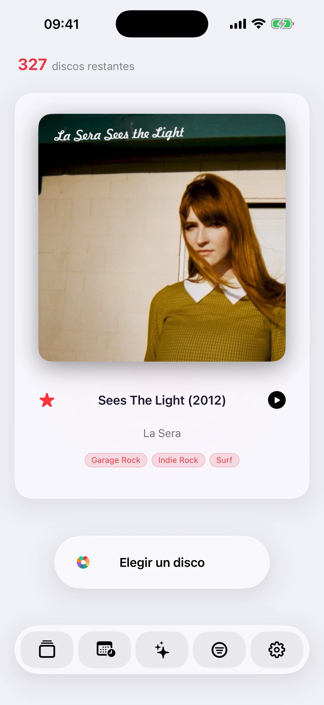

Record Picker reúne sorteos de feria, Mood Pick, catalogación enriquecida, iCloud, exportación, gestión de duplicados, 32 idiomas y apps nativas para iPhone, iPad, Apple Watch y Mac.
Record Picker 2.0Record Picker 2.0
Funciones
Record Picker 2.0
Una colección bien cuidada
Construye una colección limpia, comprobable y agradable, incluso cuando las bases públicas no bastan.
El escaneo de códigos de barras recurre a Discogs cuando MusicBrainz no conoce la referencia y completa la ficha automáticamente si Discogs encuentra la edición.
Metadatos de MusicBrainz y Discogs
Lista de deseos separada de la caja
Detección de duplicados y controles de calidad de datos
Record Picker 2.0
Caratulas y datos visuales
Mantén la colección agradable de explorar con caratulas recuperadas o elegidas por ti.
Búsqueda de caratulas en Cover Art Archive
Importación manual desde Fotos o Archivos
Búsqueda web cuando falta una caratula
Restaurar caratula original
Edición de portadas y datos visuales

Record Picker 2.0
Selector horizontal para iPhone
Gira el iPhone para elegir con la portada, los metadatos y los controles visibles a la vez.
Portada a la izquierda y detalles completos a la derecha
Título, artista, etiquetas de género, formato, sello y año de alta visibles
Botón Pick centrado junto a los metadatos
Barra inferior flotante equilibrada entre la portada y el borde de la pantalla
Las estadísticas pasan a tres columnas en horizontal
Record Picker 2.0
Selección aleatoria personalizable
Elige el próximo disco sin perder el control, con azar que mantiene viva la colección.
Sorteo ponderado que favorece discos menos escuchados
Filtros por año, género, formato, velocidad y favoritos
Exclusiones temporales para apartar sin borrar
Desliza la portada a la izquierda para sacar otro disco
Desliza a la derecha para deshacer el último sorteo, también en iPad
Historial navegable para entender qué vuelve a aparecer
Record Picker 2.0
Ambientes y reproducción
Elige por ambiente y conserva un rastro de escucha para que la colección siga revelandose con el tiempo.
Selección por ambiente con modelos locales de Apple cuando están disponibles
Calculo local con metadatos cuando los modelos no están disponibles
Estadísticas narrativas con Apple Intelligence en el dispositivo cuando esté disponible
Historial reciente de discos sorteados o escuchados
Reproducción mediante Apple Music, Spotify, Deezer, YouTube Music, Amazon Music, SoundCloud, Qobuz y Tidal cuando esté disponible
Apple Watch rediseñado
La portada queda como fondo desenfocado, con botones de favorito, deshacer el último sorteo y siguiente sorteo, cada uno con respuesta háptica propia.
Diseño adaptado desde 41 mm hasta Ultra
Pequeños retoques: selector de portada más equilibrado en iPad, sincronización iPhone-Watch más rápida y petición discreta de reseña.
Navegación y análisis de la colección
Explora, revisa y entiende tu colección sin salir de la app, con interfaces propias para iPhone y iPad.
Navegación rápida por la caja
Pequeña estrella roja en cada fila de iPhone y cada tarjeta de iPad para marcar o quitar favoritos
Botones Liquid Glass unificados
Filas de iPad legibles y acceso directo a detalles desde las portadas
Arrastrar y soltar en iPad donde realmente ayuda
Detección de duplicados y controles de calidad de datos
Comprobaciones de calidad para años, fechas de alta, duplicados, sellos, portadas, géneros, formatos y pistas ausentes
Completar géneros, estilos y pistas mediante MusicBrainz y luego Discogs
Deslizar para borrar en deseos e historial de AI Mood
Sincronización iCloud sin complicaciones
Tus datos siguen a tus dispositivos mediante iCloud, sin proveedores de IA de terceros ni IA en la nube.
Caja, lista de deseos, duplicados resueltos, exclusiones, historial, eliminaciones recuperables y portadas propias siguen tus dispositivos.
Edición de portadas y datos visuales
CSV para hojas de cálculo y JSON limpio, separados para caja y lista de deseos
Copia de seguridad completa bajo demanda
Sin proveedores de IA de terceros ni IA en la nube; Apple Intelligence permanece en el dispositivo
Las reseñas de Internet nunca se recopilan automáticamente
32 idiomas
Record Picker está disponible en 32 idiomas, con nuevas variantes y localizaciones: árabe, catalán, coreano, danés, inglés para Australia/Canadá/Reino Unido, finlandés, francés canadiense, hebreo, hindi, indonesio, noruego, polaco, portugués, ruso, sueco y turco.
Árabe, hebreo, hindi, japonés, coreano, chino simplificado y tradicional
Historial de App Store
v2.0
Record Picker 2.0 es nuestra mayor actualización: una experiencia rediseñada en torno a tres formas de elegir qué escuchar — Disco del día, Mood Pick y Random Pick.
iPhone · iPad · Mac · Apple Watch · Ya disponible
Disco del día relaciona noticias musicales verificadas, aniversarios, reediciones y conciertos cercanos opcionales con los discos que tienes o deseas. Cada propuesta explica el motivo y cita la fuente.
Avanza y retrocede entre varias sugerencias oportunas y mejora la clasificación privada con Relevante y No relevante.
El nuevo Grafo de colección conecta obras, grabaciones, intérpretes y ediciones relacionadas, especialmente útil para la música clásica.
Una guía inicial más clara, una nueva pantalla de inicio en Mac y una navegación más compacta en iPhone destacan las funciones principales.
Mejoras en MusicBrainz, calidad de datos, traducciones y rendimiento.
Tu colección y lista de deseos siguen siendo privadas: las coincidencias y la personalización se realizan en tu dispositivo.
v1.9
Record Picker 1.9 presenta Disco del día: un motivo actual y privado para redescubrir un disco que ya tienes.
Las noticias musicales verificadas, los aniversarios importantes y, opcionalmente, los conciertos cercanos se relacionan con tu colección solo en tu dispositivo.
Cada sugerencia explica por qué se eligió y cita su fuente fechada. Las noticias de la lista de deseos permanecen separadas de los discos que puedes escuchar.
Los recordatorios privados opcionales, los comentarios de relevancia y Disco del día en el Apple Watch mantienen útiles las sugerencias. Tu colección nunca se envía al servicio de noticias.
Versiones
v1.8
Record Picker 1.8 unifica iPhone, iPad, Apple Watch y Mac bajo una misma versión.
Más formatos físicos: vinilo, CD, SACD, SACD híbrido, MiniDisc, casete, DVD-Audio, Blu-ray Audio y discos de 78 rpm.
Campos propios para música clásica: obras, números de catálogo, directores, orquestas, conjuntos, solistas, fechas y lugares de grabación.
Importación y exportación CSV más claras con el campo neutro «Media Format», manteniendo la compatibilidad con archivos anteriores.
Mayor fiabilidad en copias de seguridad, favoritos, carátulas, importaciones y correcciones de metadatos.
Separa las correcciones fiables que la app puede realizar de las decisiones que requieren tu elección, mostrando la fuente y el nivel de confianza de cada propuesta.
Compara lado a lado los conflictos entre MusicBrainz y Discogs. La cola de reparación se puede reanudar e incluye informe CSV y opción de deshacer.
Una nueva guía de cuatro pasos presenta la importación, la calidad de los datos, Random Pick, Mood Pick y Free/Pro.
Las fichas muestran primero el año de publicación original y conservan el año exacto de la edición.
v1.6
Record Picker es gratis, con Pro de por vida y una aplicación nativa para Mac
Record Picker ahora es gratuito para colecciones de hasta 100 registros; una compra Pro única desbloquea una colección ilimitada en iPhone, iPad y Mac, sin suscripción.
La nueva aplicación nativa de Mac convierte la pantalla grande en un centro de comando para navegar, enriquecer, limpiar y redescubrir la colección.
La sincronización de iCloud responde mejor y su estado ahora es visible en un Centro de sincronización dedicado.
Las importaciones CSV ahora protegen los favoritos existentes; También puede restaurar favoritos sólo desde una copia de seguridad anterior sin reemplazar la colección actual.
La detección de duplicados es mucho más rápida, la selección de reseñas es mejor y la reindexación de palabras clave de reseñas ahora muestra un progreso claro.
Los diagnósticos de almacenamiento claros informan problemas en lugar de hacer que un error parezca una pérdida de datos.
v1.5
Mayor sincronización, material gráfico y calidad de datos
Sincronización de iCloud más confiable en iPhone, iPad y Apple Watch.
Las ilustraciones ahora se agregan automáticamente después de la entrada manual o de código de barras, con respaldos más sólidos.
Herramientas mejoradas de calidad de datos, gestión de duplicados y recuperación de revisiones críticas.
v1.4
iPhone en horizontal, gestos en la portada y favoritos más rápidos
Sorteo de iPhone en horizontal
Historial navegable para entender qué vuelve a aparecer
Lista de deseos separada de la caja
Estadísticas
Pequeños retoques: selector de portada más equilibrado en iPad, sincronización iPhone-Watch más rápida y petición discreta de reseña.
v1.3
Apple Watch rediseñado, Discogs como alternativa y 32 idiomas
La portada queda como fondo desenfocado, con botones de favorito, deshacer el último sorteo y siguiente sorteo, cada uno con respuesta háptica propia.
Diseño adaptado desde 41 mm hasta Ultra
El escaneo de códigos de barras recurre a Discogs cuando MusicBrainz no conoce la referencia y completa la ficha automáticamente si Discogs encuentra la edición.
Record Picker está disponible en 32 idiomas, con nuevas variantes y localizaciones: árabe, catalán, coreano, danés, inglés para Australia/Canadá/Reino Unido, finlandés, francés canadiense, hebreo, hindi, indonesio, noruego, polaco, portugués, ruso, sueco y turco.
Pequeños retoques: selector de portada más equilibrado en iPad, sincronización iPhone-Watch más rápida y petición discreta de reseña.
v1.2
Catálogo, selección inteligente y acompañante Apple Watch
Catalogo musical completo para importaciones, alta manual de álbumes y escaneo de códigos.
Sorteo aleatorio animado, filtros por ano, favoritos, exclusiones temporales, historial y estadísticas.
Selección por ambiente con modelos locales de Apple cuando estén disponibles; si no, calculo local con metadatos.
Búsqueda MusicBrainz, caratulas Cover Art Archive o importación manual, copia/restauración, Atajos Siri y Apple Watch.
La colección permanece local; las búsquedas de metadatos y caratulas solo se realizan cuando el usuario las inicia.
v1.1.1
Mejoras de App Store
Interfaz y bases internas refinadas para una experiencia mas fluida.
Mejor soporte para iPad.
Selección por ambiente con mejor uso de criticas.
Calidad de datos: fichas de disco, borrado manual de filas y búsquedas Discogs/MusicBrainz.
Pistas faltantes: búsqueda MusicBrainz y luego Discogs.